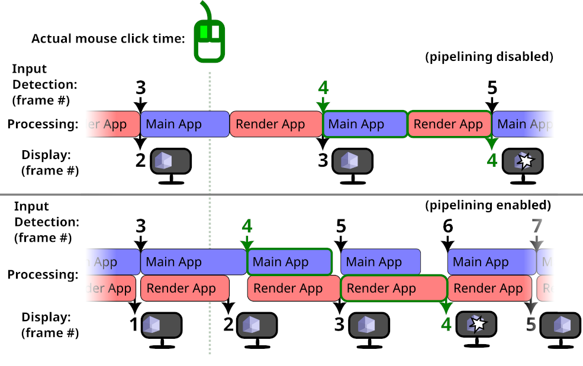

| Bevy Version: | 0.12 | (outdated!) |
|---|
This entire book is outdated and no longer maintained. I am keeping it online, in case anyone still finds any of the information in it useful. To adapt to newer versions of Bevy, please consult Bevy's migration guides.
Performance Tunables
Bevy offers a lot of features that should improve performance in most cases, and most of them are enabled by default. However, they might be detrimental to some projects.
Luckily, most of them are configurable. Most users should probably not touch these settings, but if your game does not perform well with Bevy’s default configuration, this page will show you some things you can try to change, to see if they help your project.
Bevy’s default configruation is designed with scalability in mind. That is, so that you don’t have to worry too much about performance, as you add more features and complexity to your project. Bevy will automatically take care to distribute the workload as to make good use of the available hardware (GPU, CPU multithreading).
However, it might hurt simpler projects or have undesirable implications in some cases.
This trade-off is good, because small and simple games will probably be fast enough anyway, even with the additional overhead, but large and complex games will benefit from the advanced scheduling to avoid bottlenecks. You can develop your game without performance degrading much as you add more stuff.
Multithreading Overhead
Bevy has a smart multithreaded executor, so that your systems can automatically run in parallel across multiple CPU cores, when they don’t need conflicting access to the same data, while honoring ordering constraints. This is great, because you can just keep adding more systems to do different things and implement more features in your game, and Bevy will make good use of modern multi-core CPUs with no effort from you!
However, the smart scheduling adds some overhead to all common operations (such as every time a system runs). In projects that have little work to do every frame, especially if all of your systems complete very quickly, the overhead can add up to overshadow the actual useful work you are doing!
You might want to try disabling multithreading, to see if your game might perform better without it.
Disabling Multithreading for Update Schedule Only
Multithreading can be disabled per-schedule. This means it
is easy to disable it only for your code / game logic (in the Update schedule),
while still leaving it enabled for all the Bevy engine internal systems.
This could speed up simple games that don’t have much gameplay logic, while still letting the engine run with multithreading.
You can edit the settings of a specific schedule via the app builder:
use bevy::ecs::schedule::ExecutorKind;
App::new()
.add_plugins(DefaultPlugins)
.edit_schedule(Update, |schedule| {
schedule.set_executor_kind(ExecutorKind::SingleThreaded);
})
// ...Disabling Multithreading Completely
If you want to try to completely disable multithreading for everything,
you can do so by removing the multi-threaded default Cargo feature.
In Cargo.toml
[dependencies.bevy]
version = "0.12"
default-features = false
features = [
# re-enable everything you need, without `multi-threaded`
# ...
]
(see here for how to configure Bevy’s cargo features)
This is generally not recommended. Bevy is designed to work with multithreading. Only consider it if you really need it (like if you are making a special build of your project to run on a system where it makes sense, like WASM or old hardware).
Multithreading Configuration
You can configure how many CPU threads Bevy uses.
Bevy creates threads for 3 different purposes:
- Compute: where all your systems and all per-frame work is run
- AsyncCompute: for background processing independent from framerate
- I/O: for loading of assets and other disk/network activity
By default, Bevy splits/partitions the available CPU threads as follows:
- I/O: 25% of the available CPU threads, minimum 1, maximum 4
- AsyncCompute: 25% of the available CPU threads, minimum 1, maximum 4
- Compute: all remaining threads
This means no overprovisioning. Every hardware CPU thread is used for one specific purpose.
This provides a good balance for mixed CPU workloads. Particularly for games that load a lot of assets (especially if assets are loaded dynamically during gameplay), the dedicated I/O threads will reduce stuttering and load times. Background computation will not affect your framerate. Etc.
Examples:
| CPU Cores/Threads | # I/O | # AsyncCompute | # Compute |
|---|---|---|---|
| 1-3 | 1 | 1 | 1 |
| 4 | 1 | 1 | 2 |
| 6 | 2 | 2 | 2 |
| 8 | 2 | 2 | 4 |
| 10 | 3 | 3 | 4 |
| 12 | 3 | 3 | 6 |
| 16 | 4 | 4 | 8 |
| 24 | 4 | 4 | 16 |
| 32 | 4 | 4 | 24 |
Note: Bevy does not currently have any special handling for asymmetric (big.LITTLE or Intel P/E cores) CPUs. In an ideal world, maybe it would be nice to use the number of big/P cores for Compute and little/E cores for I/O.
Overprovisioning
However, if your game does very little I/O (asset loading) or background computation, this default configuration might be sub-optimal. Those threads will be sitting idle a lot of the time. Meanwhile, Compute, which is your frame update loop and is important to your game’s overall framerate, is limited to fewer threads. This can be especially bad on CPUs with few cores (less than 4 total threads).
For example, in my projects, I usually load all my assets during a loading screen, so the I/O threads are unused during normal gameplay. I rarely use AsyncCompute.
If your game is like that, you might want to make all CPU threads available for Compute. This could boost your framerate, especially on CPUs with few cores. However, any AsyncCompute or I/O workloads during gameplay could impact your game’s performance / framerate consistency.
Here is how to do that:
use bevy::core::TaskPoolThreadAssignmentPolicy;
use bevy::tasks::available_parallelism;
App::new()
.add_plugins(DefaultPlugins.set(TaskPoolPlugin {
task_pool_options: TaskPoolOptions {
compute: TaskPoolThreadAssignmentPolicy {
// set the minimum # of compute threads
// to the total number of available threads
min_threads: available_parallelism(),
max_threads: std::usize::MAX, // unlimited max threads
percent: 1.0, // this value is irrelevant in this case
},
// keep the defaults for everything else
..default()
}
}))
// ...And here is an example of an entirely custom configuration:
App::new()
.add_plugins(DefaultPlugins.set(TaskPoolPlugin {
task_pool_options: TaskPoolOptions {
min_total_threads: 1,
max_total_threads: std::usize::MAX, // unlimited threads
io: TaskPoolThreadAssignmentPolicy {
// say we know our app is i/o intensive (asset streaming?)
// so maybe we want lots of i/o threads
min_threads: 4,
max_threads: std::usize::MAX,
percent: 0.5, // use 50% of available threads for I/O
},
async_compute: TaskPoolThreadAssignmentPolicy {
// say our app never does any background compute,
// so we don't care, but keep one thread just in case
min_threads: 1,
max_threads: 1,
percent: 0.0,
},
compute: TaskPoolThreadAssignmentPolicy {
// say we want to use at least half the CPU for compute
// (maybe over-provisioning if there are very few cores)
min_threads: available_parallelism() / 2,
// but limit it to a maximum of 8 threads
max_threads: 8,
// 1.0 in this case means "use all remaining threads"
// (that were not assigned to io/async_compute)
// (clamped to min_threads..=max_threads)
percent: 1.0,
},
}
}))
// ...Pipelined Rendering
Bevy has a pipelined rendering architecture. This means Bevy’s GPU-related systems (that run on the CPU to prepare work for the GPU every frame) will run in parallel with all the normal systems for the next frame. Bevy will render the previous frame in parallel with the next frame update.
This will improve GPU utilization (make it less likely the GPU will sit idle waiting for the CPU to give it work to do), by making better use of CPU multithreading. Typically, it can result in 10-30% higher framerate, sometimes more.
However, it can also affect perceived input latency (“click-to-photon” latency), often for the worse. The effects of the player’s input might be shown on screen delayed by one frame. It might be compensated by the faster framerate, or it might not be. Here is a diagram to visualize what happens:

The actual mouse click happens in-between frames. In both cases, frame #4 is when the input is detected by Bevy. In the pipelined case, rendering of the previous frame is done in parallel, so an additional frame without the input appears on-screen.
Without pipelining, the user will see their input delayed by 1 frame. With pipelining, it will be delayed by 2 frames.
However, in the diagram above, the frame rate increase from pipelining is big enough that overall the input is processed and displayed sooner. Your application might not be so lucky.
If you care more about latency than framerate, you might want to disable pipelined rendering. For the best latency, you probably also want to disable VSync.
Here is how to disable pipelined rendering:
use bevy::render::pipelined_rendering::PipelinedRenderingPlugin;
App::new()
.add_plugins(DefaultPlugins.build().disable::<PipelinedRenderingPlugin>())
// ...
.run();Clustered Forward Rendering
By default, Bevy uses a Clustered Forward Rendering architecture for 3D. The viewport (on-screen area where the game is displayed) is split into rectangles/voxels, so that the lighting can be handled separately for each small portion of the scene. This allows you to use many lights in your 3D scenes, without destroying performance.
The dimensions of these clusters can affect rendering performance. The default settings are good for most 3D games, but fine-tuning them could improve performance, depending on your game.
In games with a top-down-view camera (such as many strategy and simulation games), most of the lights tend to be a similar distance away from the camera. In such cases, you might want to reduce the number of Z slices (so that the screen is split into smaller X/Y rectangles, but each one covering more distance/depth):
use bevy::pbr::ClusterConfig;
commands.spawn((
Camera3dBundle {
// ... your 3D camera configruation
..Default::default()
},
ClusterConfig::FixedZ {
// 4096 clusters is the Bevy default
// if you don't have many lights, you can reduce this value
total: 4096,
// Bevy default is 24 Z-slices
// For a top-down-view game, 1 is probably optimal.
z_slices: 1,
dynamic_resizing: true,
z_config: Default::default(),
}
));For games that use very few lights, or where lights affect the entire scene ( such as inside a small room / indoor area), you might want to try disabling clustering:
commands.spawn((
Camera3dBundle {
// ... your 3D camera configruation
..Default::default()
},
ClusterConfig::Single,
));Changing these settings will probably result in bad performance for many games, outside of the specific scenarios described above.